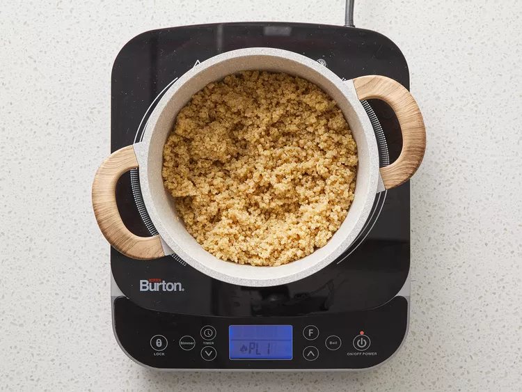
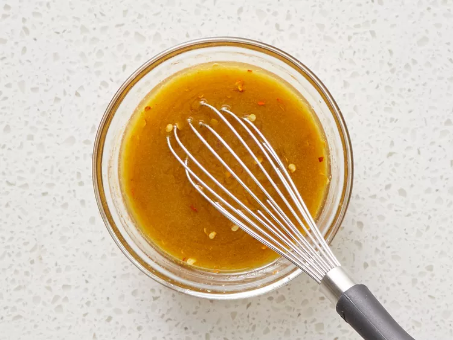
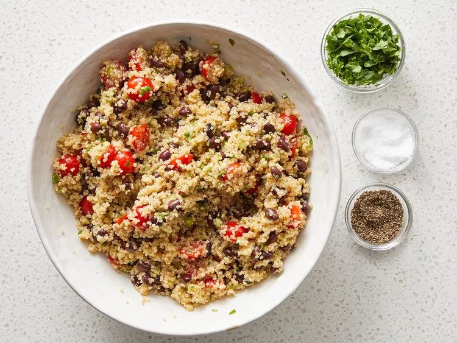

Easy Quinoa Salad

This quinoa salad is easy to make for a great summer meal. Light and citrusy, it's a whole new way to enjoy quinoa. Lime juice and cilantro give a refreshing kick, while quinoa and black beans make it hearty and filling.
Ingredients:->
- 2 cups water
- 1 cup quinoa
- ¼ cup extra-virgin olive oil
- 2 limes, juiced
- 2 teaspoons ground cumin
- 1 teaspoon salt
- ½ teaspoon red pepper flakes, or more to taste
- 1 ½ cups halved cherry tomatoes
- 1 (15 ounce) can black beans, drained and rinsed
- 5 green onions, finely chopped
- ¼ cup chopped fresh cilantro
- salt and ground black pepper to taste
Directions:->
- Bring water and quinoa to a boil in a saucepan. Reduce heat to medium-low, cover, and simmer until quinoa is tender and water has been absorbed, 10 to 15 minutes. Set aside to cool.
- Meanwhile, whisk olive oil, lime juice, cumin, salt, and red pepper flakes together in a small bowl.
- Combine quinoa, tomatoes, black beans, and green onions in a large bowl. Pour dressing over quinoa mixture; toss to coat. Stir in cilantro; season with salt and black pepper.
- Serve immediately or chill in the refrigerator.